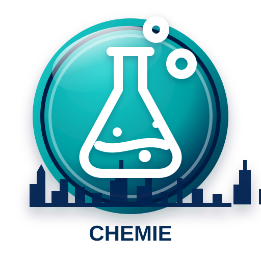
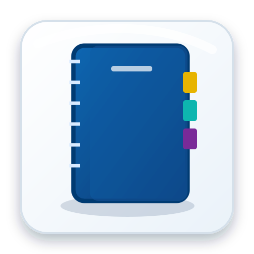
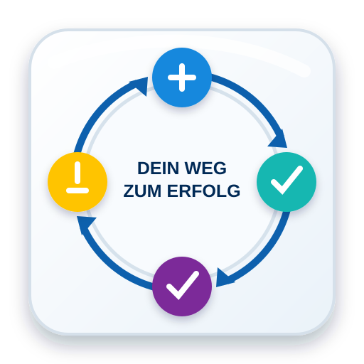

Mathematik
Grundlagen, Gleichungen, Funktionen, Geometrie, Analysis und Abiturvorbereitung.
Mathematik kennenlernen →Nachhilfe mit System · Leipzig
Individuelle Nachhilfe in Mathematik, Physik, Chemie und Informatik – klar strukturiert, persönlich begleitet und auf nachhaltigen Lernerfolg ausgerichtet.

Nachhilfe mit easyIT · Leipzig
Was machen wir anders, warum gerade wir?.
Direkt zum Fach
Alle wichtigen Informationen stehen bereits auf der Startseite. Die Fachkarten führen direkt zu den jeweiligen Schwerpunkten.
Grundlagen, Gleichungen, Funktionen, Geometrie, Analysis und Abiturvorbereitung.
Mathematik kennenlernen →

Stoffe, Reaktionen, Säuren und Basen, Atombau, Bindungen und Stöchiometrie.
Chemie kennenlernen →
Medienkompetenz, Office, Algorithmen, Programmierung, Datenbanken und Webtechnik.
Informatik kennenlernen →Unterricht auf einen Blick
Die Startseite bündelt Zielgruppen, Unterrichtsformen, Methodik und Kontaktmöglichkeiten.
Aufgaben, Erklärungen und Lernziele werden auf den aktuellen Stand abgestimmt.

Einzelunterricht oder kleine Lerngruppen mit maximal sechs Teilnehmenden.
Flexible Unterstützung in Leipzig und Umgebung sowie digital per Online-Unterricht.

Klare Ziele, regelmäßige Rückmeldung und erkennbare Entwicklung statt bloßem Abarbeiten.

Geordnete Unterlagen, nachvollziehbare Lösungswege und nachhaltige Heftführung.

Fehler dürfen gemacht werden. Entscheidend ist, sie zu verstehen und daraus weiterzulernen.
Methodik
Ich zerlege schwierige Aufgaben in nachvollziehbare Schritte. Gemeinsam klären wir zuerst, was bereits sicher sitzt, wo Unsicherheiten entstehen und welcher nächste Lernschritt wirklich sinnvoll ist.

Für wen?
Begleitung im Schulalltag, bei Hausaufgaben, Tests und Klassenarbeiten.
Gezielte, strukturierte und stressfreie Vorbereitung auf Prüfungen.
Unterstützung bei Grundlagen, Übungsaufgaben und schwierigen Vorlesungsinhalten.
Transparente Rückmeldung zu Entwicklung, Stärken und nächsten Lernschritten.
Ablauf
Kurzes Gespräch zu Schulform, Fach, aktuellem Stand und Ziel.
Wir prüfen gemeinsam, welche Arbeitsweise und Unterrichtsform passt.
Klare Schwerpunkte, realistische Ziele und regelmäßige Rückmeldung.
Wissenswertes
Gute Nachhilfe löst nicht nur die aktuelle Aufgabe. Sie macht sichtbar, warum ein Lösungsweg funktioniert, wie Fehler entstehen und wie das Gelernte auf neue Situationen übertragen wird.
Diagnose: Der aktuelle Lernstand wird zuerst geklärt.
Struktur: Jede Stunde besitzt ein verständliches Ziel.
Transfer: Gelerntes wird auf neue Aufgaben angewendet.
Rückmeldung: Fortschritte und offene Punkte bleiben transparent.
Kontakt
Schildern Sie kurz, in welchem Fach Unterstützung benötigt wird und welche Schulform oder Klassenstufe betroffen ist.